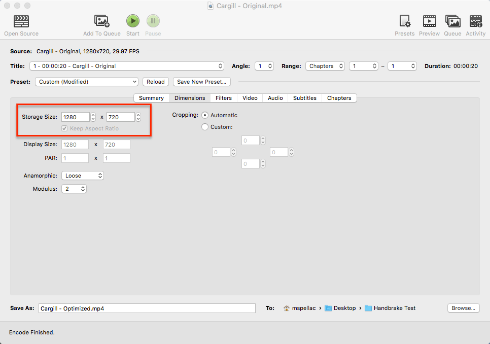
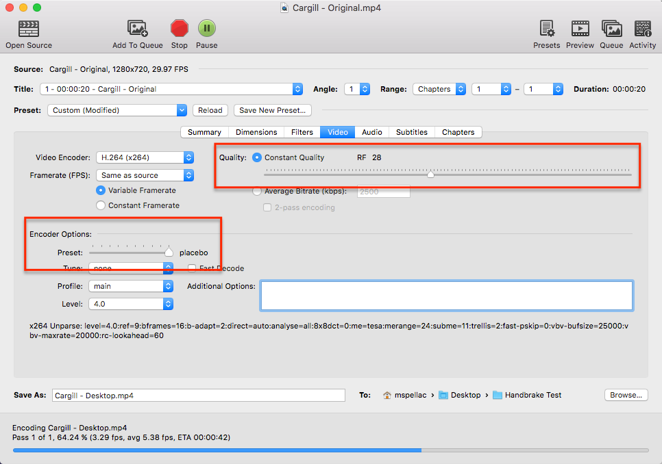

This is a brief overview of the steps one might take to produce a more performance friendly video banner using HandBrake, though this lesson can be used to optimize many other types of web based videos.
The performance of our work contributes to the overall experience users have, so it is very important to deliver assets that will not hinder that experience. HandBrake is terrific for this task and can be downloaded and used on all popular desktop operating systems.
Step 1 - Summary
- Open your source video. HandbBrake is capable of opening up many different kinds of video types.
- Doublecheck the duration of the video. The length of the video will contribute to overall file size, so a video no longer than 30 seconds for banners is usually recommended.
- Ensure that your output container is MP4. This format has pretty much become the de facto standard for web based video. VHB will suppoprt WebM, another popular and more effecient video format, soon.
- Make sure the Web Optimized checkbox is clicked on. This will help improve streaming of the video over slower networks.
- Create a new file name and choose an output path.
Step 2 - Dimensions

- Choose a median dimension for your video. The larger your video dimension are, the larger the file size will be.
- 1280 x 720 is considered a decent target for desktop, while about half this size should be considered if a version for mobile is to be created.
- These are not fixed dimensions, but guidelines. Different sizes are okay, but should stay as near to these ranges as possible.
- Videos that are not banners may demand different dimensions.
Step 3 - Video

- Select the quality of your video. A default range of 20 is generally good, but has little impact on file size.
- A range between 26 and 28 can usually be depended upon to deliver good quality video, with a reduced file size.
- Adjust Encoder Options to Placebo. This trades off compression effeciency against encoding speed and may improve file size without sacrificing quality.
- For desktop, we should be shooting for 2-3MB in file size. A mobile version of the video, if needed, should obviously be smaller.
Step 4 - Audio

- Video banners, in order to auto-play, must be muted. If no audio track is required, then it can safely be deleted, which will reduce file size further.
- If your banner has sound, then it cannot auto-play. However, you can optimize your audio track further by reducing the audio bitrate to 128KB, which is adequate for most audio playback.
Note: A bitrate is number of bits per second that can be transmitted along a digital network.
Step 5 - Encode. Wash. Rinse. Repeat.

- You are done! You may now encode your video!
- Feel free to experiment with different ranges and other settings until you are satisfied with the quality of the video and file size.
Output Examples
Source Video
- Video Dimensions: 1280 x 720
- Constant Quality: N/A
- Video Size: 20MB
Video (Desktop Optimized)
- Video Dimensions: 1280 x 720
- Constant Quality: 28
- Output Size: 2.6MB
Optimized Video (Mobile)
- Video Dimensions: 716 x 404
- Constant Quality: 29
- Output Size: 996KB